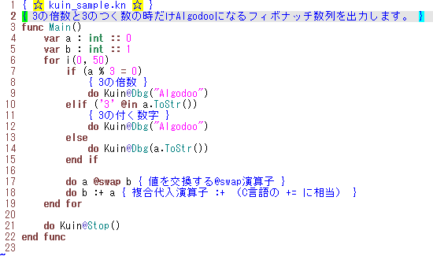

kuin.vim (syntax highlighting file for Vim)
Syntax highlighting and indent setting files
Last Modified: 2012/09/30 15:20:05.
日本語(Japanese), English
Download
Last Update: 2012/09/30
kuin-vim-20120930.zip
Neocomplcache-snippets-complete for Kuin will help you a lot.
NOTE: Download them with your own risk.
See also: Kuin setting for Neocomplcache-snippets-complete
Usage
Unzip the zip file into C:\Program Files\vim\vim73
- "syntax" folder is for syntax highlighting.
- "indent" folder is for indent.
- "ftdetect" folder is for file-type detect.
Changes / Old versions
Visit Changes
Overview
kuin.vim:s are a syntax highlighting and indent setting files for a language named Kuin.
(Kuin is created by @kuina_tesso)
|
[ Sample ]  |
This HTML is described by Tatt (tatt61880) ---- Twitter: @tatt61880